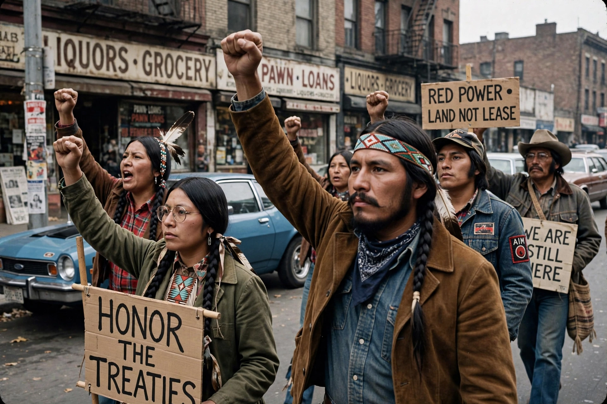

American Indian Movement
| American Indian Movement | |
|---|---|
 | |
| AIM activists in the 1970s | |
| Abbreviation | AIM |
| Formation | July 28, 1968; Minneapolis, Minnesota |
| Founders | Dennis Banks, Clyde Bellecourt, Vernon Bellecourt, George Mitchell, and others |
| Purpose | Native American civil rights, tribal sovereignty, treaty rights |
The American Indian Movement (AIM) is an American Indian grassroots movement founded in July 1968 in Minneapolis, Minnesota, initially centred in urban areas to address systemic issues of poverty, discrimination, and police brutality against Native Americans. AIM soon widened its focus to include treaty rights, sovereignty, spirituality and the preservation of Indigenous cultures, becoming the most prominent organisation of the "Red Power" movement.
Major actions
AIM members participated in or supported landmark protests including the occupation of Alcatraz Island (1969–1971), the Trail of Broken Treaties caravan and occupation of Bureau of Indian Affairs headquarters in Washington, D.C. (1972), and — most famously — the 71-day occupation of Wounded Knee on the Pine Ridge Reservation in 1973, which drew worldwide attention to the federal government's treaty obligations. The movement also founded survival schools and legal aid projects in Minneapolis and other cities.
Later years and legacy
Internal divisions and intense federal surveillance and prosecution weakened AIM in the late 1970s, including the controversial conviction of activist Leonard Peltier for the 1975 killings of two FBI agents at Pine Ridge (Peltier's life sentence was commuted in January 2025). AIM chapters continue to campaign on issues such as the protection of sacred sites, the crisis of missing and murdered Indigenous women, and opposition to pipelines crossing tribal lands.
See also
Wounded Knee incident · Leonard Peltier · Red Power movement